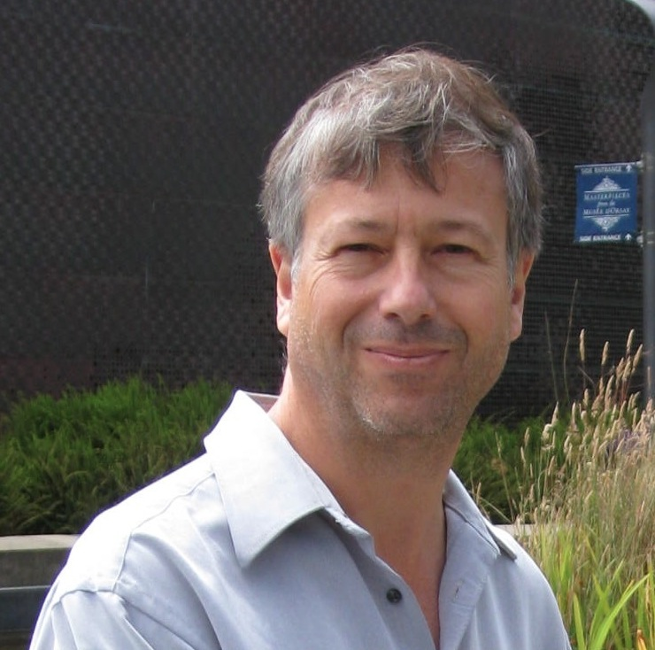

27-28 April 2015
Santa Clara University
Santa Clara, California
ISSC
2015
This year's Interplanetary Small Satellite Conference conference will take place at the Santa Clara University on 27-28 April, 2015. As in years past, this conference is organized by students, alumni, and staff from Caltech, MIT, Cornell, the University of Michigan, and JPL. We look forward to welcoming the community back to Santa Clara to explore mission concepts, discuss emerging technologies, and foster “outside the box” thinking that will be critical to future interplanetary small satellite missions.
Announcements
Abstract submissions are closed.
The registration for ISSC is filling up but we're keeping exhibitor registration at discounted prices until 2/25.
Both days of the conference will be live streamed online.
The conference program, presentation schedule, and booklet are not yet available online.
Registration fees are discounted until January 31, 2015. Click here to register.
A map of the conference and Santa Clara campus can be found here.
Important Dates
January 31, 2015 Last day for early registration discount.
February 15, 2015 Abstract submission deadline.
April 27-28, 2015 Conference.
Keynote
Speakers
Dave Korsmeyer
David J. Korsmeyer, Ph.D., is currently a NASA senior executive and the Director of the Engineering Directorate at NASA's Ames Research Center, Moffett Field, Calif. Korsmeyer received a Bachelor of Science in aerospace engineering from The Pennsylvania State University, a Master of Science and doctorate in aerospace engineering from the University of Texas at Austin. He is also a Sloan Fellow in the Stanford Graduate School of Business and received a Master of Science in management from Stanford in 2002.
Beginning in 1987, Korsmeyer was a founding member of the Large Scale Programs Institute in Austin, Texas that developed the original Lunar Base Model for NASA's Johnson Space Center. Korsmeyer worked on numerous technical projects for NASA's Lewis (now Glenn) Research Center and Johnson Space Center in orbital mechanics, low-thrust trajectory modeling and mission design. Korsmeyer developed a guidance characterization and trajectory simulation system for cis-lunar nuclear-electric low-thrust spacecraft for his doctorate, funded through grants from NASA Glenn. Upon completion of his doctorate, Korsmeyer joined NASA Ames as a staff scientist.
During his tenure at NASA Ames, Korsmeyer has led many successful projects including the Extreme Ultraviolet Explorer (EUVE) Ground Automation project with the University of California, Berkeley and NASA's Goddard Space Flight Center, and the DARWIN information system project for wind tunnels at NASA Ames and NASA Langley. In addition, Korsmeyer started the Collaborative Information Portal project for the Mars Explorer Rover (MER) mission launched in 2003. Korsmeyer has received multiple Group Achievement and Space Act awards for his technical and project work over the years and received an Outstanding Leadership Medal in 2005 and the Distinguished Senior Executive Medal in 2011. He has been fundamental in the formation and management of several NASA information technology programs including the Information Technology Base Program in 1996, the Intelligent Systems Program in 1998, and the Engineering for Complex Systems Program in 2000, the Exploration Technology Development Program in 2005 and the Enabling Technology Development and Demonstration Program in 2009. He has been an active manager and technical contributor at many levels of these programs.
In 2000, he became the branch chief and technical lead for the Collaborative and Assistant Systems area at NASA Ames. After his completion of the Stanford Sloan Program in 2002, he returned to Ames where he took over as chief of the Intelligent Systems Division. Korsmeyer was detailed to NASA Headquarters in 2003 in the Office of Space Science and supported the Prometheus Project. Then in 2004, he was detailed to NASA’s Jet Propulsion Laboratory where he was lead of the Ames’ software contributions to the Jupiter Icy Moons Orbiter (JIMO) mission.
As Intelligent Systems division chief, Korsmeyer oversaw the deployment and operation of the multiple ground software tools developed for the Mars Exploration Rovers, Phoenix Mars Lander and the International Space Station. He has led the development of a long-term partnership with NASA Johnson’s Mission Operations Directorate. In 2006, he lead a study on the use of the Constellation mission elements to support a manned mission to a near-earth asteroid, and in 2009 supported the Human Space Flight Review panel where he lead the technical analysis for the Flexible Path Architecture.
In 2012, Korsmeyer was appointed the Director of Engineering at NASA Ames, where he is responsible for all flight mission and project engineering staff and the technical activities for spaceflight systems.
Korsmeyer has published over 50 technical papers ranging from orbital mechanics, wind tunnel test environments, distributed information systems and mission operations, to crewed missions to near-Earth Objects. Korsmeyer has been married for over 24 years and has two teenage daughters.
Antonio J. Ricco

Antonio J. Ricco received BS and PhD degrees in chemistry from the University of California, Berkeley (1980) and the Massachusetts Institute of Technology, Cambridge (1984), respectively. His professional experience includes positions at Sandia National Laboratories, the University of Heidelberg, ACLARA BioSciences, the Biomedical Diagnostics Institute (Dublin), Stanford University’s National Center for Space Biological Technologies, and NASA Ames Research Center. His professional R&D experience includes chemical microsensors and microsystems; polymer microfluidic systems for genetic analysis, high-throughput drug discovery, and pathogen detection; point-of-care medical diagnostic devices; and integrated autonomous bioanalytical systems for space biology and astrobiology studies aboard small satellites.
At NASA/Ames, he was or is project technologist for the GeneSat, PharmaSat, O/OREOS, MisST, EcAMSat & SporeSat spaceflight nanosatellite missions; instrument scientist and mission manager for the O/OREOS mission; and payload technologist for the BioSentinel 6U deep space mission. He is a member of the ESA Topical Team on Future Astrobiology Experiments in Earth Orbit and Beyond.
Dr. Ricco is co-author of over 350 presentations, 210 publications, and 18 issued patents. He was an E.T.S. Walton Fellow (Dublin City University), is a Fellow of The Electrochemical Society, and serves as Vice President of the Transducer Research Foundation. He served on the Editorial Advisory Board of Analytical Chemistry and is presently an editor for the Journal of Microelectromechanical Systems (JMEMS), Sensors & Actuators B: Chemical, the Journal of Translational Engineering in Health and Medicine, and Microgravity (Nature Publishing Group).
Previous Conferences
The Interplanetary Small Satellite Conference is currently in its third year. Please click the link below to access papers, presentations, and other information about last year's conference. This page will be used to archive conference materials as this event continues in future years.